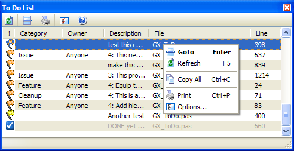

To Do List |
|
The To Do List helps you organize a list of items in your source that need special attention. You can click a column header to sort by any column in the list.  To add new to do items, type comments in your code that start with one of your configured to do tokens, such as:
{#ToDo1 Rewrite this code to work under NT} //#ToDo2 Add support for Oracle here later
The to do tokens (such as #ToDo1, #ToDo2, etc.) are configurable in the options dialog and can each have an assigned priority of Critical, High, Normal, Low, Lowest, Done, or Info, with each having its own icon in the list. By adding a token named TODO, this expert can read the standard to do entries generated by the IDE's built-in to do list. It can also extract the assigned owner and category of the to do item using the IDE's standard -o/-c switches as shown here:
// TODO 3 -cBug -oJohn: Find a way to handle invalid filenames
Based on settings, this tool can scan open project files, all files in the current project or project group, or a complete directory for to do items. It may be helpful to create an IDE Code Template to quickly create new to do items while you are coding.
Note: You can not configure the To Do list to use tokens that begin with the dollar sign ($) because this conflicts with Delphi compiler directives.
|